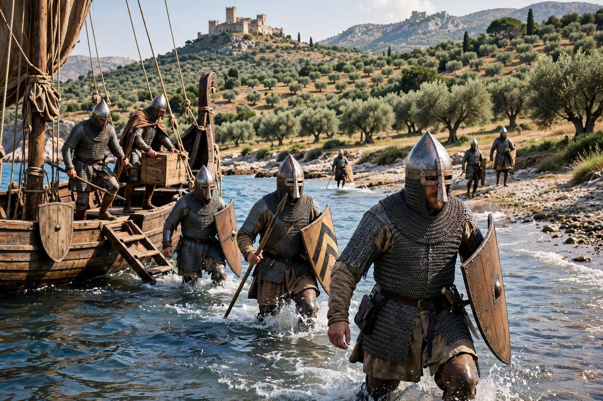

From Wikipedia, the free encyclopedia
The Hauteville family (Italian: Altavilla) was a Norman dynasty that rose from modest origins at Hauteville-la-Guichard in the Cotentin peninsula of the Duchy of Normandy to rule the Kingdom of Sicily and the Principality of Antioch. Its most famous members include Robert Guiscard, Roger I, Roger II of Sicily, and Bohemond I of Antioch.

The family's founder in Italy was Tancred of Hauteville, a minor Norman lord whose twelve sons — by two wives, Muriella and Fressenda — sought fortunes abroad. From about 1035, the elder brothers William Iron Arm, Drogo, and Humphrey established Norman power in Apulia amid the wars between Byzantines, Lombards, and the papacy, becoming counts of Apulia.
Robert Guiscard, a younger son, arrived in Italy around 1047 and rose to become Duke of Apulia and Calabria; in 1059 Pope Nicholas II invested him at Melfi with Apulia, Calabria, and the yet-unconquered Sicily. His youngest brother Roger I conquered Muslim Sicily between 1061 and 1091. Another line, through Tancred's grandson Bohemond, carved out the Principality of Antioch in the First Crusade.
Roger's son Roger II united Sicily with the mainland possessions and was crowned King of Sicily in 1130, creating one of the wealthiest and most administratively sophisticated states in Europe, notable for its blending of Norman, Greek, Arab, and Lombard cultures. The Hauteville male line ended with King William II in 1189; the kingdom passed, through Constance of Sicily, to the Hohenstaufen emperor Henry VI. The Antioch branch, descendants of Bohemond, ruled in the Levant until the later 13th century.
See also: Bohemond I of Antioch · Principality of Antioch · Norman conquest of southern Italy · Kingdom of Sicily